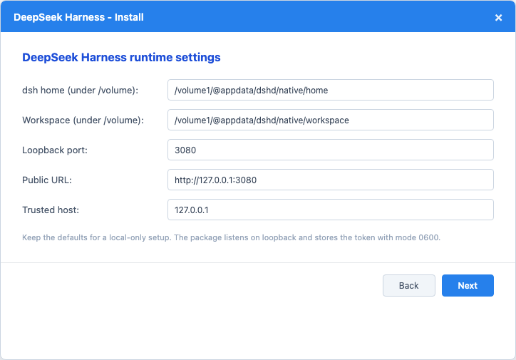
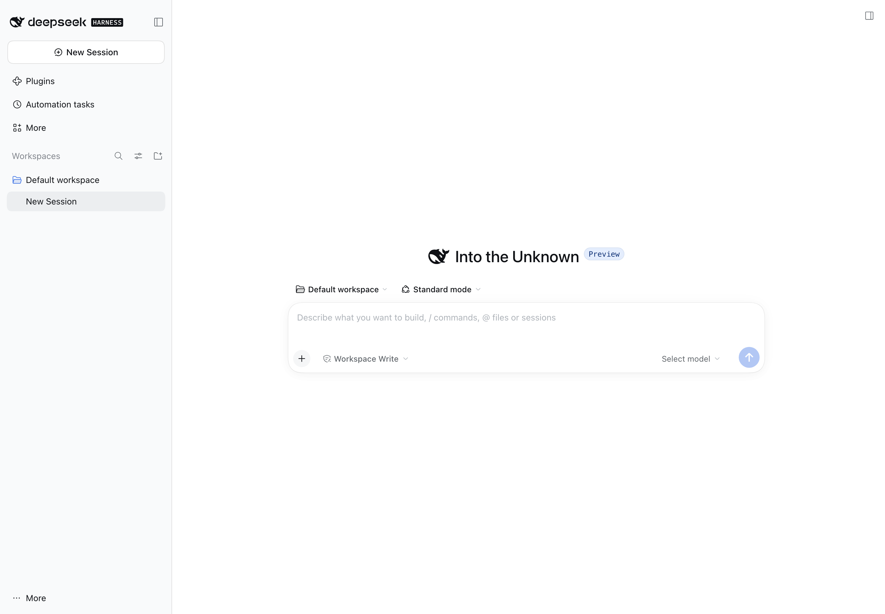

YOUR NAS.
YOUR AI AGENT.
DeepSeek Harness now runs natively on Synology DSM. One package. No Docker. No Container Manager.
DOCKER-IN-DOCKER
IS OVER.
Container Manager
on a NAS
A worker has to create and start a Compose project, then hand the token back to DSM.
DeepSeek Harness
on DSM 7.2
A bundled Node runtime runs as the unprivileged package user. DSM starts it like any other service.
INSTALL IT
LIKE A
NAS PACKAGE.
Upload the SPK, accept the third-party warning, keep the defaults. The wizard sets dsh home, workspace, port, and public URL.


YOUR FILES.
YOUR UI.
YOUR NAS.
The complete dsh web interface, served from loopback and unlocked by a one-time token URL. Your projects stay on your NAS.

THREE STEPS.
NO DOCKER.
Upload the SPK
Package Center → Manual Install. Pick x86_64 or armv8 and accept the warning.
Start & copy token
Run dshd-token. Open the token URL from the NAS or a reverse proxy.
Open the workspace
Add a DeepSeek API key, pick a model, and start building with your files.